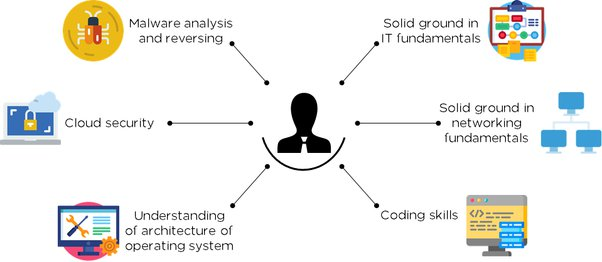

What is Cyber Security?
Cyber could be defined as something related to the group of computers or the internet. At the same time, security means the mechanism of protecting anything. So both the terms Cyber and security took together define the way of protecting user data from the malicious attacks that could lead to the security breach.
1. How does Cyber Security makes Working so Easy?
- No doubt that the mechanism of Cybersecurity makes our work very easy by ensuring the availability of the resources contained in any network.
- A business or organization could face a huge loss if they are not sincere about the security of their online presence. As every technology has its own way to make the work easy, so does network security.
- It’s the actual way to make the working easy is by ensuring that the data is confidential, following integrity, and available when needed.
2. What can you do with Cyber Security?
It allows us to secure our network or system, which has to work with critical or sensitive organizational data.
Below are a few things that one could do using this.
- Data protection: The primary role of Cybersecurity is to protect the confidential data that is supposed to be accessed by the authorized user only.
- Enforcing CIA: The three features of Cybersecurity: Confidentiality, Integrity, and Availability, could be enforced by the mean of internet security.
- Mitigate breach risk: The very secure and updated system is very less biased towards security breaches. It helps the users to protect their data from getting exposed to any of malicious user or attacker.
- Ensures business continuity: It offers some plan that ensures sustainable business processes, which could keep the organization’s reputation and ensure that business should continue without any obstacle.

3.Working with Cyber Security
It comprises of various approaches that are worked in SOC (security operation center) to protect the organization from breaches.
Below are the two different approaches to implement Cyber Security.
Defensive Security
In defensive security, the security analyst uses tools like SIEM, IPS, IDS, Firewall, Proxy, etc. It is actually an approach where the organization protects its network from malicious traffic. It basically includes analyzing the data packet that is entering into the organization’s network to perform some task.
Offensive Security
In, offensive security, the ethical hacker tries to hack the organization’s system with the system owner’s consent to detect how the system could be compromised so that they can correct the issues with the system and protect it from being compromised by the actual attacker. The ethical hacker could do white, grey or black hat hacking based on the request and approvals. The person who does ethical hacking for any organization is also called a pentester.
4. Advantages
It consists of numerous plus points. As the term itself says, it offers security to the network or system, and we all know that securing anything has a lot of advantages.
- Securing an organization: Cybersecurity is all about securing an organization’s network from external attacks. It makes sure that the organization should perform well and should feel safe about its important data.
- Safeguarding sensitive data: The highly confidential data like patient data, student data, and sales data have to be secure from unauthorized access so that they couldn’t be misused. It’s what we can achieve using Cybersecurity.
- Hamper unauthorized access helps us: Protect the system from being accessed by someone who is not authorized to access it. The data is kept highly secure and could only be fetched with authenticated users.
- Ensuring data reliability: Data or information from any organization protected by the mechanism of cybersecurity is considered highly reliable and could be used without giving a second thought.
5. Required Skills?
- In Cybersecurity, one has to possess a better understanding of computer networks, should have an idea about TCP/IP, HTTP, and other protocols.
- One should have the capability to analyze the data packets entering the organization’s network.
- In terms of offensive security, one has to be good in the application’s source code review and understand web application architecture.
5. Conclusion
Cybersecurity is a very emerging field that plays a vital role in ensuring the organization’s process continuity. It is not a single thing but comprises several approaches or techniques. Any business must have to adopt Cybersecurity in order to protect their user’s information and keep the business moving forward in an efficient way.